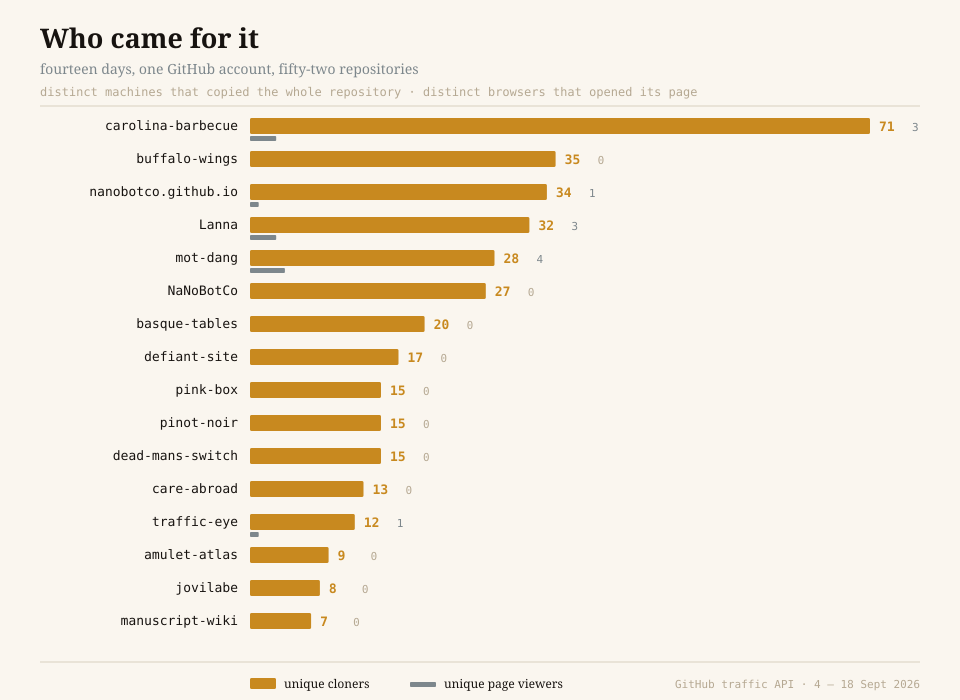
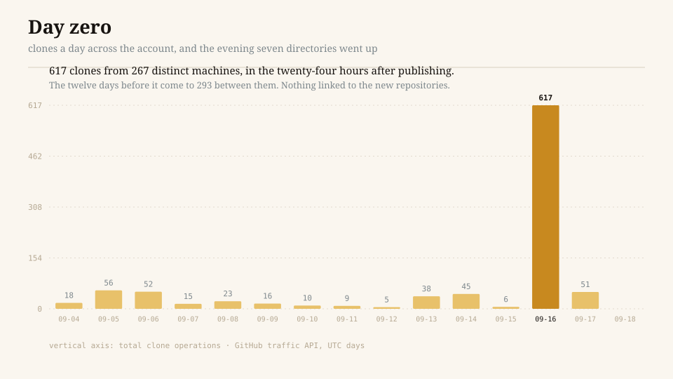
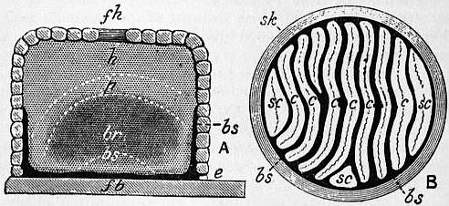
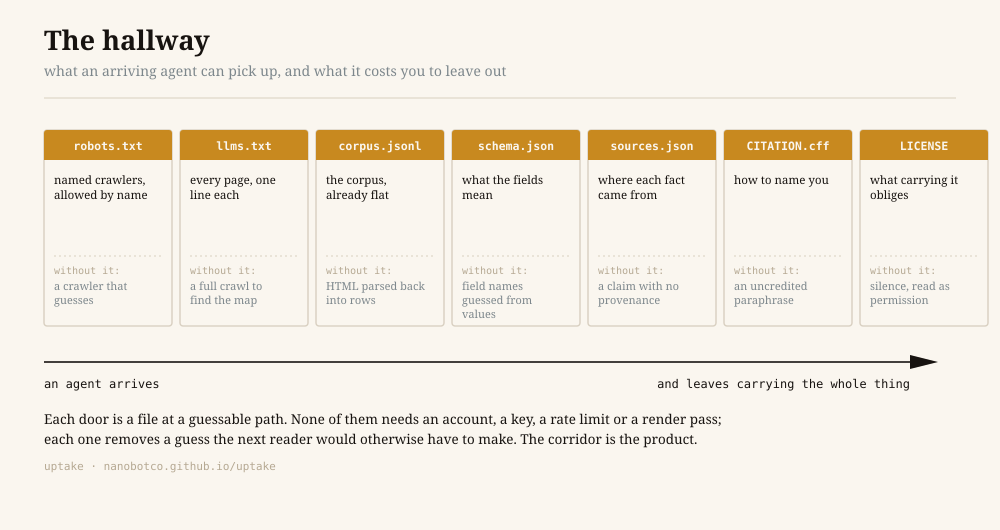
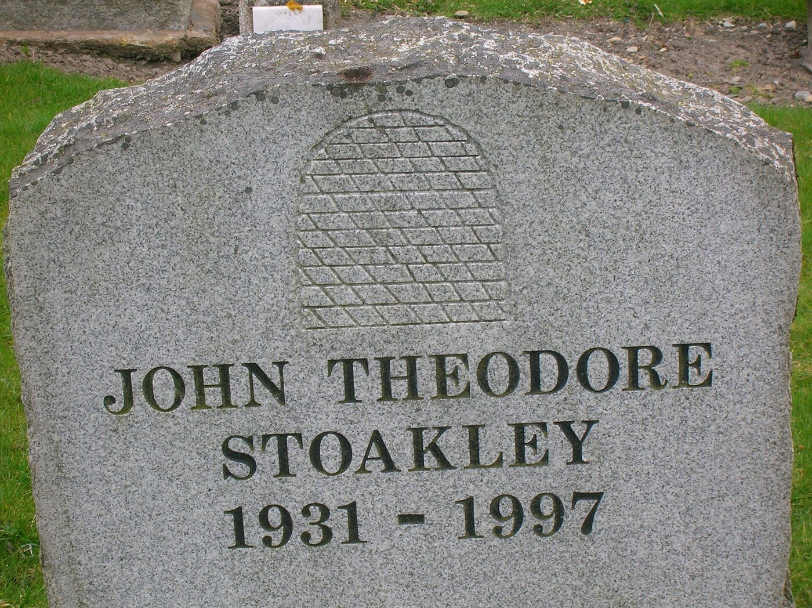
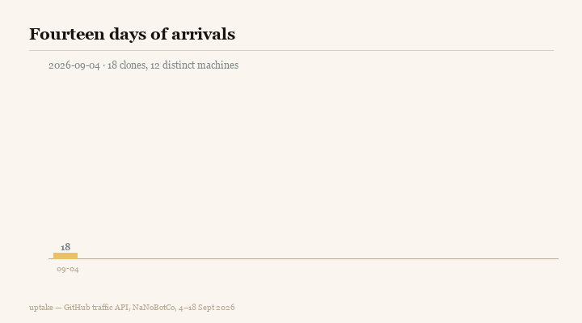

a field manual · NaNoBotCo
Uptake
Publishing for machines that copy
Fifty-two repositories. Fourteen days. 961 clones from 501 distinct machines, against 36 page views from 20 distinct browsers. Twenty-three of those repositories were copied by five or more machines and opened by nobody. This is a field manual for that condition, written from the logs of one small publisher who kept building while the audience changed species.
The unit of arrival is no longer the click. It is the copy. Nothing about how a page is written, hosted, named or measured follows from the old unit any more.
1The number
On 18 September 2026 I pulled the traffic endpoints for every repository on one GitHub account 1. Fifty-two repositories, most of them small, none of them promoted, none of them linked from anywhere with an audience. The fourteen-day window held this:
| clone operations | 961 |
|---|---|
| distinct machines that cloned | 501 |
| GitHub page views | 36 |
| distinct browsers that viewed | 20 |
| repositories with any cloner | 47 of 52 |
| repositories with five or more cloners and zero viewers | 23 |
| cloners per viewer | 25.1 |

The same account's search numbers over a far longer period run to roughly a dozen clicks. Search Console counts a click as a human leaving a results page for yours 44. On this account that metric has been describing a rounding error while something twenty-five times larger happened on an endpoint nobody in marketing reads.
Five of the repositories are a cluster: directories of United States regional food — Carolina barbecue, chicken wings, Basque dining rooms, mom-and-pop donut shops, pinot noir. Between them, 266 clone operations from 156 distinct machines, and three human beings who opened a page. Not three hundred. Three.
That is the whole finding, and the rest of this manual is what follows from taking it seriously rather than filing it as a curiosity.
2What a clone is, and what a click was
A click delivers one rendered page to one person. What arrives is HTML after the stylesheet, after the script, after the consent banner. The licence is not in it. The schema is not in it. The sources behind the sentences are not in it. The other four hundred pages are not in it. The reader has the view; the artifact stayed home.
A clone delivers the artifact.
git clone transfers the full object graph — every file, every prior version of every file, the commit history, the branch structure 41. Git sends it as a packfile with delta compression, which is why a corpus with eighteen months of history can cost less on the wire than a single magazine photograph 42. Automated cloners often go cheaper still, taking a shallow or partial clone that skips the history and keeps the tree 43, and they are still leaving with more than any click has ever delivered: the data files, the schema, the sources registry, the licence, the build tooling, the notes to a future maintainer.
Three consequences follow, and all three break something that search-era practice assumed.
The copy persists. A click leaves nothing behind but a log line. A clone leaves a complete, runnable copy on hardware you do not own and cannot bill. When the hosting lapses — and hosting lapses — the copies are the work. Five hundred and one machines currently hold copies of that account's output. That is a preservation posture nobody paid for.
The host stops mattering. A cloner never resolves your domain in a way it remembers. github.io or a custom name, the fetch is identical and neither appears in what it carries away. Everything the last two decades taught about domain authority, canonical hosts and redirect hygiene addresses a surface this audience does not touch. The name only matters again at the far end, in a citation string a human eventually reads.
Nothing renders. JavaScript does not execute, lazy images do not load, analytics does not fire. A site whose content exists only after a client-side render is, to this reader, an empty folder with a build script in it.
3The measurement, and what it cannot say
The numbers above are weaker than they look, and the argument is better for saying so.
The window is fourteen days and there is no history. GitHub's traffic endpoints hold a rolling fortnight and discard the rest 1. Every figure here is that fortnight. A seasonal effect, a one-off crawl, a coincidence with somebody's scheduled job — none of them can be ruled out from inside a two-week frame.
Uniques are counted by IP. An anonymous cloner is identified by address. One operator rotating through a cloud range inflates the unique count; a fleet behind one NAT deflates it. The number is a floor and a ceiling at the same time and it is not clear which.
Window uniques are not the sum of daily uniques. The same machine on two days is two daily uniques and one window unique. Any arithmetic that adds daily columns is wrong, and plenty of dashboards do it.
There is no user agent. The traffic endpoints do not say who. Nothing here identifies an operator. The inference that this is machine traffic rests on two things instead.
The first is the ratio. Twenty-five distinct cloners for every distinct viewer, and twenty-three repositories with double-digit copying and no page load at all. A person who finds a repository looks at it before cloning it — the README renders, the file tree renders, that is what the page is for. Copying without looking is not a human sequence.
The second is the shape. Clones per cloner runs at 1.86 for the largest repository, 1.60, 1.43 for the next two — distinct actors arriving about once. A scheduled continuous-integration job produces the opposite signature: few actors, many repeats. One repository in the set does show that signature, 250 clones from 32 machines at 7.8 each, and it is a mirror loop of my own making. It is excluded from every conclusion here, and naming it is the point: the ratio is what separates a crowd from an echo.
There is a floor. Four to six unique cloners appear against repositories that have not been touched in months and contain nothing anyone would want. Something is walking the account and taking everything. Treat the floor as noise and read signal only above it.
Private repositories are in the set. Five of the fifty-two are private, and they clone too, because the account's own automation clones them. Their numbers sit near the floor, which is a small piece of evidence that the floor is what I think it is.
What survives all of that: the day-zero spike in section 4 is forty times the daily baseline, which no amount of IP-counting error explains.
4Day zero
On 16 September 2026 seven directories went public from that account in a single evening. Here is what the account's clone traffic did.

617 clone operations in twenty-four hours, from 267 distinct machines. The twelve days preceding total 293 between them. Across the seven new repositories, four human page views.
Take the largest one on its own. carolina-barbecue was created at 04:54 UTC. By the end of that UTC day it had been cloned 130 times by 69 distinct machines. Its referrer table holds a single entry: github.com, one visit. Nothing linked to it. It was hours old. It was not in any search index, because a search index takes days to weeks to reach a new document and longer to trust it.
So how did sixty-nine machines find a repository that nothing pointed at, within hours?
They subscribed. GitHub publishes a public event timeline — repository creation, pushes, releases — through an API in real time 4, and GH Archive has been packaging that same timeline into hourly files, queryable in bulk, since 2011 3. A new public repository is not a document somebody has to stumble on. It is a row in a stream, and the stream is free.
This is the mechanical difference underneath the whole discipline:
| discovery latency | who initiates | what arrives | |
|---|---|---|---|
| a new web page | days to weeks | crawler, on its own schedule | one rendered document |
| a new public repository | minutes to hours | subscriber, on an event | the entire tree and its history |
Search optimisation was a long game because the first step was long. Somebody had to find you, decide you were worth revisiting, build up enough signal to rank you. The event stream removes the first step. Publishing is the notification.
Which reframes the cadence question. The received wisdom is that shipping seven things in a night is unfocused, and that one thing a month, promoted properly, does better. Against an audience that subscribes to creation events and copies whole artifacts, seven publishes is seven notifications, seven complete objects, seven chances to be the corpus somebody keeps. The evening that would have been criticised as scattered produced more machine uptake than the preceding fortnight of steady work.
I would not generalise that to an audience of people. It holds for this one.
5Three bots wearing one coat
Most robots.txt files in the world address a single imaginary robot. There are at least four real ones and they want different things.
The trainer takes your text to fit weights. ClaudeBot 25, GPTBot 26, Google-Extended 27, Applebot-Extended 29, CCBot into Common Crawl 30. It pays you nothing today. What it might pay, years out, is that a model answering a question about Lexington dip answers it the way you wrote it, because your phrasing is what it saw. There is no invoice and no dashboard for this, and it is the largest thing on the table.
The index takes your text to be able to cite it. Claude-SearchBot 25, OAI-SearchBot 26, PerplexityBot 28, Googlebot 27. It pays in a citation, sometimes with a link.
The errand-runner takes your page because a person asked a question ten seconds ago. Claude-User 25, ChatGPT-User 26, Perplexity-User 28. It pays in a referral, which is the only currency the old dashboard can see.
The cloner takes the repository. It has no published user agent, because git over HTTPS from a build runner looks exactly like git over HTTPS from a laptop. Nobody has a name for this one, which is part of why nobody counts it.
Every major operator now names its three web agents separately and documents them 25262728. That separation is an offer: you can say yes to the errand and no to the training, or the reverse, or yes to everything. The Content Signals Policy expresses the same three-way choice as one line in robots.txt — search, ai-input, ai-train, each a plain yes or no 12, rolled out across millions of domains in September 2025 with search allowed, training refused and answers left neutral 1314. RSL goes further and attaches licensing terms, including per-crawl and per-inference pricing, to the same file 1516, and Cloudflare has wired HTTP 402 into the path so a crawler can be quoted a price rather than a refusal 33.
None of this is enforcement. robots.txt has been standards-track since 2022 9 and it remains a request; measured compliance varies by crawler and by directive 34. A signal tells a cooperating operator what you want. It does nothing to one that does not cooperate, and the framing to keep is that you are writing to the cooperative subset.
The question worth answering before writing any of it: which of the four are you actually courting? They are not interchangeable, and a default that treats them as one bot gives you the least valuable answer to all four questions at once. The account measured here is open to all of them, because a corpus about barbecue and amulets has nothing to protect and everything to gain from being the version that got learned.
6The objective function moved
Search engine optimisation maximised a product of two probabilities: that you rank, and that ranking earns a click. Every practice descends from that objective — the keyword, the title tag, the backlink, the page-speed budget, the click-through rate.
The newer acronyms shift one term. Generative and answer-engine optimisation maximise the probability of being cited in a generated answer. It is a real change and it is not a big enough one, because it keeps the same ending: a human, at the end, clicking.
That ending is thinning. Pew tracked 68,879 searches by 900 US adults in March 2025: where an AI summary appeared, a traditional result was clicked on 8% of visits, against 15% where none appeared; a link inside the summary was clicked on 1% 32. Cloudflare's crawl-to-refer ratio — a platform's crawler requests divided by requests carrying its referrer — put one major operator at 70,900 pages crawled per referral sent in the week of 19–26 June 2025, with the caveat that native-app traffic carries no referrer and may overstate it 31. Later windows and other measurements differ by orders of magnitude, which is itself worth knowing: this is a number in motion, not a constant.
Optimising a term that is heading toward zero is a way of being busy.
The clone does not end in a click. It ends in a copy on somebody else's disk, a corpus in somebody's pipeline, a paragraph in somebody's answer that may never name you at all. So the objective becomes:
P(taken whole) × P(what you are owed survives the taking).
Call the practice uptake. Not search optimisation, because there is no search. Not answer optimisation, because the answer is downstream of something that already happened. Uptake is the discipline of being taken, and of being taken in a form that still carries your name when it lands.
Two terms, and the second is the one publishers keep dropping. Being taken is not difficult — the measurements in section 1 happened with no promotion at all. Being taken with your attribution intact is a design problem, and it is solved in the repository or not at all.
7The artifact, not the page
The practical turn is to stop shipping pages that reference data and start shipping data that renders pages.
An artifact is complete on arrival. Somebody who takes it has the records, the vocabulary that explains the records, the sources behind each field, the licence that governs reuse, and the tooling that turns the whole thing back into a website. They can verify it, extend it, correct it and republish it without asking. The published site is one view of the artifact — the view for people — and it is not where the value sits.
What that implies, stated plainly:
The corpus is the deliverable. JSON records on disk, one per node, with a schema beside them. The HTML is generated. If the generator vanished tomorrow the work would survive; if the records vanished, the HTML is a fossil.
Flat beats paginated. A retrieval pipeline reading one JSON Lines file 49 does in one request what forty paginated HTML pages do in forty, without a parser and without waiting out a rate limit. The same content at both shapes costs a few kilobytes and removes a reason to give up.
Stable paths beat clever ones. A URL that a machine guessed right once should keep working. /api/nodes.json, /llms.txt, /sitemap.xml, /CITATION.cff — boring, guessable, conventional. The .well-known convention exists for the same reason 2448; check what is already reserved before inventing anything.
Nothing worth having sits behind a render. Server-side output, or a static build. The audience in section 1 does not run your JavaScript.
A key is a closed door. Every account, token and rate limit removes a class of reader. That may be the right trade for your business; it is a trade, and it should be made on purpose rather than inherited from a framework default.
Gaps belong in the artifact. A coverage file that says what the corpus does not contain is more useful to a careful reader than another hundred records, because it tells them where not to trust you. Very few publishers ship one. It costs an afternoon.
8The hallway

Once you accept that the reader arrives, takes everything and leaves without speaking, the design question becomes narrow and answerable: what can they pick up on the way through?

robots.txt — the named crawlers, allowed by name 9. A wildcard Allow: / is technically sufficient and practically weaker, because a bare wildcard is what a site looks like when nobody has thought about it. Naming ClaudeBot, GPTBot, PerplexityBot and the rest individually is a statement that the door is open on purpose. Add the Content Signals line for the three-way preference 12, the Sitemap: line 17, and comments pointing at the machine-readable files below.
llms.txt — a Markdown map of every page, one line each, with a sentence saying what each one is 1011. Be clear-eyed: this is a community proposal from September 2024, no major operator has committed to reading it, and sceptics are not obviously wrong. It costs one generated file. Ship it as a courtesy and do not model traffic on it.
The flat corpus — corpus.jsonl, nodes.csv, llms-full.txt. Every record, already parsed, in three shapes so that whatever the arriving pipeline prefers is already there 49.
The schema — a JSON Schema beside the data saying what a field means, which are required, what the enumerations are. Without it, field semantics get inferred from values, and inference is where quiet corruption enters somebody else's dataset.
The sources registry — one record per source, with the fields each one backs. Section 9 is about why this is the whole ballgame.
CITATION.cff — the platform reads it and renders a "Cite this repository" control from it 28; Zenodo uses it to populate a DOI deposit on release 7; reference managers import it. It is the only file in the tree that answers, in a form a machine can use, the question what should I call you.
LICENSE — section 10.
State the relations in the document head while you are there — rel="license", rel="describedby", rel="alternate" for the plain-text and Markdown copies. Typed links are a twenty-year-old standard 23 and they cost four lines.
Round it out with a page addressed to machines in prose — what the corpus is, what it is not, what the licence asks — and a Dataset block in JSON-LD on the index so that a corpus reads as a corpus 181922. If you expect training pipelines, a Croissant description makes it loadable rather than merely findable 2021. One constraint on all of it: the markup has to describe the document a reader actually gets 45. Structured data that promises more than the page delivers is the oldest way to lose the benefit.
None of these files is expensive. Together they are perhaps a day of work and they run themselves after that. What they buy is that an arriving agent never has to guess, and every guess it does not have to make is a place your work cannot be quietly garbled.
That is the hallway. The corridor is the product; the pages are the furniture.
9Provenance is the product
Here is the part a marketer will care about most, because it is the part that cannot be replicated by anyone generating filler.
The corpora described here carry provenance at the field level. Not a bibliography at the bottom of a page — a tier on each claim: cited (a named source says this), harvested (pulled from a named dataset under its licence), tradition (widely held within the practice, no single source), inference (assembled from other records here), field (observed in person, dated). The record carries the tier; the page displays it; the API serves it.
Three arguments for the cost of doing that.
It is the thing a careful reader cannot manufacture. A model summarising your page can reproduce your facts and your phrasing. It cannot reconstruct which of your sentences came from a 1953 cookbook, which from a sauce label photographed last month, and which you worked out yourself — unless you wrote it down. Provenance is the one layer that does not survive paraphrase, which makes it the one layer that keeps pointing back at you.
It is what makes a corpus usable by somebody who has to be careful. Anyone assembling training data, building a retrieval index, or answering a question they can be held to needs to know how much weight a claim carries. A flat wall of confident sentences is unusable for that purpose at any volume. A tiered corpus is usable at first read. As the open web closes — and the measured direction is closing, fast 35 — an open corpus that declares its own confidence gets rarer, not more common.
It is the argument against your own errors. A tier that says inference is a standing invitation to correct it, and corrections arrive from strangers who cloned the thing.
The failure mode to name, because it is the tempting one: padding. A corpus that pads itself with generated records to look larger destroys the only property it had. The tier system makes padding visible, which is another reason to run it — it disciplines the publisher before it informs the reader.
10The licence is the only thing that travels
Take the inventory of what you own, and ask of each item whether it survives a clone.
| survives a clone | |
|---|---|
| your domain | no |
| your analytics | no |
| your navigation, header, footer | no |
| your consent banner | no |
| your rate limit | no |
| your paywall | no |
your LICENSE file | yes |
your CITATION.cff | yes |
| a provenance field inside the record | yes |
| a source URL inside the JSON | yes |
Everything in the top half is infrastructure, sitting between the reader and the artifact. Everything in the bottom half is inside the artifact, so git carries it whether the taker wants it or not.
This reorders the priorities of a decade. The domain, the CDN, the analytics stack, the consent flow — that is the whole budget of a modern content operation, and none of it reaches this audience. Two text files do.
On which licence. Attribution-only asks to be named. Share-alike asks to be named and obliges a derivative work to carry a compatible licence — CC BY-SA 4.0, section 3(b) 36. For a database of facts assembled at cost, share-alike is the term that keeps the next version open, and ODbL does the same job where the rows came from OpenStreetMap 38. Link the deed rather than the legal code where a person will read it 37; link the legal code where the obligation is being stated.
Say what it does and does not do. It governs copying and adaptation of the licensed material. Whether training a model on licensed text creates an adaptation bound by the same terms is not settled anywhere, and anybody telling you otherwise is selling something. What share-alike reliably does is bind the visible reuse: the fork, the republished dataset, the derivative directory. That is a real constraint on a real behaviour, and it is the behaviour the numbers in section 1 are measuring.
Make it machine-readable or it is decoration. A layered licence file — records under one term, place points under another, pictures under their own, code under a third — is intellectually correct and gets classified NOASSERTION by every tool that matches on SPDX identifiers 39. Name the identifiers explicitly, put per-part declarations in the files themselves following REUSE 40, and repeat the licence in the Dataset block 19 and in CITATION.cff 8. The reader that matters here has no eyes.
11What to count now
The dashboard has to change, because the current one measures a surface this audience does not touch. What to put on it:
Unique cloners per repository per window, floor-adjusted. Establish the floor from your own dormant repositories — mine is four to six — and read only what clears it. This is the primary number. It counts distinct actors that took the whole artifact.
Day-zero uptake. Unique cloners in the first twenty-four hours after publishing. It measures how well your account is subscribed to, independent of subject. On this account it runs at forty times baseline on a publish day.
Clones per cloner. The shape number. Near 1.0 is a crowd arriving once. Above about 4 is a loop, and a loop is your own infrastructure or somebody's cron job; exclude it before it flatters you.
Corpus completeness. Records, sourced fields as a proportion of total fields, and the gap list. This is an input metric, and input metrics are what you can act on.
Citation appearances. Ask the assistants a question your corpus answers, and see whether they answer it your way. Crude, manual, and the only direct read on the trainer's payment.
Referral, demoted. Keep it. Stop leading with it.
On the web side, the same question needs a different instrument: classify requests by user agent into training crawlers, search crawlers, retrieval agents, social preview fetchers, SEO scrapers, uptime monitors and scripts. A single "bot" bucket is useless, because it cannot tell the crawler you built the corpus for from the one strip-mining it for a competitor's backlink product. Two caveats: user agent is self-declared and a scraper can call itself anything, so these are claims rather than proof; and the classifier is yours to write, because bot scoring is an enterprise feature almost everywhere.
What not to bother instrumenting: bounce rate, time on page, scroll depth, session recording. There is no session.
12What does not work
Ranked by how often it is recommended.
A custom domain, bought for this audience. A cloner never sees it. It matters in a citation string a person eventually reads, and for portability if you ever move — both real, neither worth a subscription bought on the theory that it improves uptake.
Keyword pages. There is no query. A page built around a phrase somebody might type is a page with nothing in it for a reader that arrived by subscription.
Client-side rendering. Section 2.
Blocking by default and negotiating later. A defensible choice for a publisher whose business is subscriptions; it is the wrong default for anyone whose asset is a corpus that gains from being the canonical version of its subject. Decide it deliberately. The measured direction of the open web is toward closure 35, which raises the value of staying open.
Writing about the thing instead of the thing. A blog post announcing a dataset gets crawled. The dataset gets cloned. Put the effort in the artifact.
Padding the corpus. Section 9.
Treating llms.txt as a channel. Ship it; it costs a generated file. Do not build a plan on a proposal no operator has committed to reading 10.
Chasing the 1%. The link inside the AI summary, clicked on one visit in a hundred 32. It is a real number and it is the smallest one on the table.
13The tactics, in order of cost
Everything above, as a build order. Hours are working estimates for a site that already has its content in structured files; multiply by three if the content lives in a CMS.
| hours | what it buys | evidence | |
|---|---|---|---|
LICENSE with an SPDX identifier | 1 | the one term that survives a copy | 3639 |
CITATION.cff | 1 | a rendered cite control, a Zenodo deposit, a reference-manager import | 278 |
robots.txt naming the crawlers, with Content Signals | 1 | an open door that reads as deliberate | 912 |
sitemap.xml, and the Sitemap: line | 1 | the crawler half, still worth having | 17 |
a flat corpus: .jsonl, .csv, llms-full.txt | 3 | one request instead of forty, no parser | 49 |
| a JSON Schema beside the data | 3 | field meanings that are read, not inferred | — |
a Dataset block in JSON-LD | 2 | a corpus that reads as a corpus | 181922 |
llms.txt | 2 | cheap courtesy, unproven return | 1011 |
| a page addressed to machines, in prose | 2 | the terms stated where a reader will meet them | — |
| a sources registry, one record per source | 8 | the layer paraphrase cannot carry away | — |
| per-field provenance tiers | 40+ | the reason a careful reader keeps your version | 35 |
| a coverage file listing your own gaps | 4 | trust from a reader who can check | — |
| a Croissant description | 4 | loadable by a training pipeline, not merely findable | 2021 |
The first four rows are an afternoon and they are the ones almost nobody does.
14Posterity
There is an argument here that is not about marketing at all.
Five hundred and one machines hold copies of one small publisher's work. Software Heritage systematically archives public repositories with their full history and issues persistent identifiers for them 56. The Arctic Code Vault put public repositories on film in a mine 47. The Wayback Machine holds the rendered pages 46. A Zenodo release turns a version into a DOI that outlives the account 7.
None of that was arranged. It is the ambient behaviour of the system a public repository sits inside.
The publisher who noticed the numbers in section 1 put it this way: my greatest posterity strength is cloners. Which is a strange sentence until you hold it against the alternative. Work published as a website survives exactly as long as somebody pays the hosting bill and the platform stays in business. Work published as a copied repository survives in proportion to how many people took it — and the taking is free, automatic, and already happening on a scale the site analytics never showed.
This inverts a piece of received wisdom worth naming. Protecting work by restricting its copying makes it depend entirely on you. Licensing it so it can be copied, with terms that travel inside the copy, distributes it beyond your ability to lose it. Share-alike is not generosity here. It is the durable version.

15What would falsify this
The manual is built on a fourteen-day window from one account. Here is what would knock it down, written out so that a reader can check rather than take my word.
One operator, many addresses. If the 501 uniques are a handful of operators behind rotating cloud ranges, the audience is far smaller than the count and the food-cluster finding dissolves. Reverse DNS on the addresses would settle it, and the traffic endpoints do not expose addresses. Unresolved.
Uniques tracking repository count rather than content. If cloners walk accounts and take everything, a larger account gets more cloners without doing anything better, and the subject-cluster reading in section 1 is an artifact of publishing five food directories rather than of anyone wanting food directories. The floor of four to six against dormant repositories is evidence that both effects are present. Their relative size is unmeasured.
A longer window flattening the spike. Fourteen days cannot show whether day-zero uptake decays, plateaus or repeats. Retaining the endpoint output daily would answer it in a quarter. Not yet done.
The control that has not been run. Publish two matched repositories — same subject, same record count, same day — one with the full hallway from section 8 and one with a README and nothing else. Measure unique cloners over fourteen days. That experiment would separate the hallway works from publishing works, and until somebody runs it, every claim in sections 8 through 13 is reasoning from mechanism rather than from measurement. Section 4's spike is measurement. The rest is argument.
I would rather say that than dress the argument up as a finding.
Colophon: why this is shaped the way it is
The footnote, since the shape is itself the claim.
This manual is a repository before it is an article, and that is the argument rather than a convenience. A piece of writing that says the artifact matters more than the page, and then ships as a page, refutes itself in the first paragraph. So the text lives in Markdown in a tree; the figures are SVG with real text in them before they are raster; the measurements that the prose cites are CSV and JSON beside it, with the collection method and the caveats written into the files rather than into a caption; the seven doors from section 8 are cut into this repository too, so a reader can check the recommendation against the object.
Four format choices, each one made against the reader who arrives without eyes:
Figures in four formats. The SVG carries its labels as text, so a machine reading the file gets "617 clones from 267 distinct machines" as a string rather than as pixels. The PNG and JPG are rendered from the same SVG by the build, so the raster and the vector cannot drift apart. The GIF animates because a fourteen-day series that builds day by day makes the spike land harder than a still does, and because an animation is the one figure format that survives being pasted into a chat window.

Pictures in the public domain. Five of them, each with its licence and its Commons page in a sidecar file beside the image. A manual about attribution that used pictures it could not account for would be making the case for the opposite of what it says.
The numbers before the advice. Sections 1 through 4 are measurement and sections 8 through 13 are recommendation, and section 15 exists to say which is which. The interesting part of this data is small, and small findings survive being stated at their real size.
The name. Not SEO, because there is no engine and no search. Not GEO or AEO, because those keep the human click at the end of the chain and the thing being measured here has no human in it at all. Uptake is a word for being taken up and carried — which is what the logs show, and what the licence is for.
The corpora. The repositories counted here are directories with their sources on the record — Carolina Barbecue, Wing Country, Pink Box, Basque Tables, Pinot Country, Care Abroad, Amulet Atlas, Thai Roots, Mot Dang and wichaa. All of them counted at https://nanobotco.github.io/index/, and listed as JSON at https://nanobotco.github.io/index/fleet.json.
Contact. Nan · nan@motdang.net · https://ko-fi.com/defiantchiangmai · https://www.patreon.com/nanobotco
Sources
Every reference in the text resolves to an entry below; the same list is served as JSON at data/sources.json, keyed by the same numbers.
- 1REST API endpoints for repository metrics — trafficGitHub · documentationThe clone and view endpoints, and the fourteen-day retention window.
- 2About CITATION filesGitHub · documentationCITATION.cff is read by the platform and surfaced in the repository sidebar.
- 3GH ArchiveIlya Grigorik · datasetThe public GitHub timeline, hourly, queryable — how a brand-new repository becomes known within the hour.
- 4REST API endpoints for eventsGitHub · documentationThe public events feed, including repository creation and pushes.
- 5Software HeritageInria / UNESCO · archiveSystematic archival of public repositories, with persistent identifiers.
- 6Archiving and Referencing Source Code with Software HeritageDi Cosmo & Zacchiroli, PMC · paperSWHID identifiers and the preservation argument.
- 7Zenodo — GitHub integrationCERN · documentationTurning a release into a DOI, and how CITATION.cff populates the deposit.
- 8Citation File FormatCFF project · specificationThe YAML schema for CITATION.cff.
- 9RFC 9309 — Robots Exclusion ProtocolIETF · standardrobots.txt as a standards-track document since 2022, and what a crawler is obliged to do with it.
- 10The /llms.txt fileJeremy Howard / Answer.AI · specificationThe proposal, published September 2024, for a Markdown page map addressed to language models.
- 11llms-txt repositoryAnswer.AI · specificationThe reference implementation and the spec's own history.
- 12Content Signals PolicyCloudflare · specificationThe search / ai-input / ai-train triple, expressed as a line in robots.txt.
- 13Your site, your rules: new AI traffic options for all customersCloudflare · announcementDefault-block for AI crawlers on new zones, and the policy shift behind it.
- 14Cloudflare Gives Creators New Tool to Control Use of Their ContentCloudflare · press release24 September 2025; the managed rollout across millions of domains.
- 15RSL 1.0 SpecificationRSL Collective · specificationMachine-readable licensing terms attached to robots.txt, including pay-per-crawl and pay-per-inference.
- 16RSL launchRSL Collective · press releaseThe standard's origin, 10 September 2025.
- 17Sitemaps XML formatsitemaps.org · specificationThe sitemap schema, and the robots.txt Sitemap: line.
- 18schema.org/Datasetschema.org · vocabularyThe type that makes a corpus legible as a corpus rather than as a page.
- 19Dataset structured dataGoogle · documentationRequired and recommended Dataset fields, including distribution and licence.
- 20Croissant Format SpecificationMLCommons · specificationA schema.org/Dataset profile that a training pipeline can load directly.
- 21Croissant: A Metadata Format for ML-Ready DatasetsAkhtar et al., NeurIPS 2024 Datasets & Benchmarks · paperThe four-layer design and its adoption by dataset hosts.
- 22JSON-LD 1.1W3C Recommendation · standardThe serialisation every structured-data block on these pages uses.
- 23RFC 8288 — Web LinkingIETF · standardTyped relations between resources, including licence and describedby.
- 24RFC 8615 — Well-Known Uniform Resource IdentifiersIETF · standardThe /.well-known/ path convention, and why a guessable path beats a discoverable one.
- 25Does Anthropic crawl data from the web, and how can site owners block the crawler?Anthropic · documentationClaudeBot, Claude-User and Claude-SearchBot as three separate agents with three separate purposes.
- 26OpenAI botsOpenAI · documentationGPTBot, OAI-SearchBot and ChatGPT-User, and the same three-way split.
- 27Overview of Google crawlers and fetchersGoogle · documentationGooglebot against Google-Extended, and the separation of indexing from training.
- 28PerplexityBot and Perplexity-UserPerplexity · documentationA third operator drawing the same line between index and errand.
- 29About ApplebotApple · documentationApplebot and Applebot-Extended.
- 30Common CrawlCommon Crawl Foundation · datasetThe open crawl that much of the field trains on, and the path a page takes into it.
- 31The crawl before the fall of referralsCloudflare Radar · measurementCrawl-to-refer ratio: HTML requests from a platform's crawler divided by HTML requests carrying that platform's referrer. 1 July 2025; the 19–26 June 2025 window put Anthropic at 70,900:1. Cloudflare notes native-app traffic carries no referrer, so the figures may overstate.
- 32Google users are less likely to click on links when an AI summary appears in the resultsPew Research Center · study900 US adults, 68,879 searches, March 2025: a traditional result was clicked on 8% of visits where an AI summary appeared against 15% where none did; a link inside the summary was clicked on 1%.
- 33Introducing pay per crawlCloudflare · announcementHTTP 402 as a billing surface for crawlers.
- 34Scrapers selectively respect robots.txt directivesarXiv 2505.21733 · paperEmpirical compliance rates — a directive is a request, not a lock.
- 35Consent in Crisis: The Rapid Decline of the AI Data CommonsData Provenance Initiative, arXiv 2407.14933 · paperHow fast the open web closed to crawlers, and what that does to the value of a corpus that stayed open.
- 36CC BY-SA 4.0 legal codeCreative Commons · licenceSection 3(b): an adapted work carries a compatible licence.
- 37CC BY-SA 4.0 deedCreative Commons · licenceThe plain-language summary a reader is shown.
- 38Open Database License 1.0Open Data Commons · licenceShare-alike over a database, which is what OpenStreetMap-derived rows carry.
- 39SPDX License ListLinux Foundation · registryThe identifier a machine matches on. A layered LICENSE file that no identifier matches is read as NOASSERTION.
- 40REUSE SpecificationFree Software Foundation Europe · specificationPer-file licence declaration, for a repository whose parts differ.
- 41git-cloneGit project · documentationWhat a clone actually transfers.
- 42Pro Git — PackfilesChacon & Straub · bookWhy the whole history costs so little to send.
- 43Get up to speed with partial clone and shallow cloneGitHub Blog · articleThe cheap-fetch shapes an automated cloner is likely to use.
- 44Search Console performance reportGoogle · documentationThe click, the impression, and the surface the old metric measured.
- 45Structured data general guidelinesGoogle · documentationMarkup must describe the page a reader gets.
- 46Internet Archive Wayback MachineInternet Archive · archiveThe second copy, and the one that outlives a host.
- 47GitHub Arctic Code VaultGitHub · archiveCold storage of public repositories, on film, in a mine.
- 48Well-Known URIs registryIANA · registryWhat is already reserved, before inventing a path.
- 49JSON Linesjsonlines.org · specificationOne record per line: the shape a retrieval pipeline reads without a parser of its own.
- 50Jean Miélot at his desk, Brussels, Royal Library MS 9278 fol. 10rWikimedia Commons · picturePublic domain. The copyist at work.
- 51Card Division, Library of CongressWikimedia Commons · picturePublic domain. An index built at enormous cost for readers who came in person.
- 52Paul Otlet and his teamWikimedia Commons · picturePublic domain. The Mundaneum: a machine-shaped corpus, staffed by people.
- 53Straw skep carved on a gravestone, Stobo KirkWikimedia Commons · picturePublic domain. A hive, cut in stone, for posterity.
- 54Straw skep, Encyclopaedia Britannica 1911Wikimedia Commons · picturePublic domain line engraving.
{kind=link}
{kind=link}
{kind=link}
{kind=link}
{kind=link}